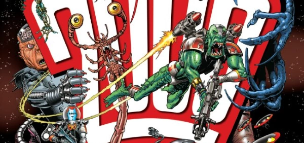

Covers featuring content that doesn't link easily to any particular story.
Art by Cliff Robinson
| Title | Parts | Pages | w indicates a wraparound coverCovers | Year(s) | Issues | Writer | Artist | Colourist | Letterer |
|---|---|---|---|---|---|---|---|---|---|
| UFO: Watch The Sky! ++Readers Report++ | ~ | ~ | 1 | 1978 | 64 | n/a | Kevin O'Neill | <-- | n/a |
| Watch the Stars! | ~ | ~ | 1 | 1978 | SL3 | n/a | Kevin O'Neill | <-- | n/a |
| Interstellar Federation Invasion Begins! | ~ | ~ | 1 | 1978 | SL6 | n/a | Ron Embleton | <-- | n/a |
| Death at Warp Factor 9 | ~ | ~ | 1 | 1978 | SL10 | n/a | Graham Cotton | <-- | n/a |
| Clone Wars! | ~ | ~ | 1 | 1978 | SL17 | n/a | John Higgins | <-- | n/a |
| Guardian of the Dark Star! | ~ | ~ | 1 | 1978 | SL21 | n/a | Jose Luis Ferrer | <-- | n/a |
| Beyond the Stars! | ~ | ~ | 1 | 1978 | SL22 | n/a | Graham Cotton | <-- | n/a |
| A Giant Step for Comic-Kind | ~ | ~ | 1 | 1979 | 97 | n/a | Jose Luis Ferrer | <-- | n/a |
| Kil-Gorr | ~ | ~ | 1 | 1979 | 124 | n/a | Carlos Ezquerra | <-- | n/a |
| Zorgon: Wanted - Zapped or Alive! | ~ | ~ | 1 | 1979 | 133 | n/a | Carlos Ezquerra | <-- | n/a |
| Design Your Own Alien! | ~ | ~ | 1 | 1979 | 136 | n/a | Massimo Belardinelli | <-- | n/a |
| Martian Edition | ~ | ~ | 1 | 1980 | 157 | n/a | Kevin O'Neill | <-- | n/a |
| 1981 is the Year of the Alien | ~ | ~ | 1 | 1981 | 194 | n/a | Dave Gibbons | <-- | n/a |
| "Ho Ho Ho!" | ~ | ~ | 1w | 1984 | 398 | n/a | Kevin O'Neill | <-- | n/a |
| 2000 AD's Dice Man | ~ | ~ | 1 | 1986 | DM1 | n/a | Glenn Fabry | <-- | n/a |
| Zarjaz Prizes From Bandai! | ~ | ~ | 1 | 1983 | 329 | n/a | Kevin O'Neill | <-- | n/a |
| Thrill-Power Overload! - The Effect is Shattering! | ~ | ~ | 1 | 1991 | 749 | n/a | Richard Dolan | <-- | n/a |
Megazine cover collage.15 Years, Creep | ~ | ~ | 1w | 2005 | M237 | n/a | Simon Parr | [b&w] | n/a |
| Family Dynamic | ~ | ~ | 1 | 2006 | 1493 | n/a | Cliff Robinson | <-- | n/a |
| Overload with Thrill-Power... | ~ | ~ | 1 | 2006 | 1496 | n/a | Cliff Robinson | <-- | n/a |
| In a World of Its Own | ~ | ~ | 1 | 2007 | 1550 | n/a | Cliff Robinson | <-- | n/a |